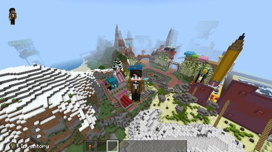
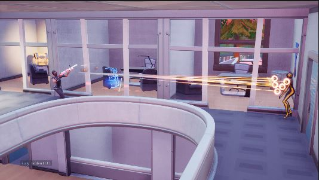

Uno de los mejores juegos que he jugado, este juego lo tiene todo. Historia, un multijugador buenisimo y unas mecanicas increibles.
De verdad si no te has dado la oportunidad de jugar hazlo no te arrepentiras y si ya lo tienes estaras de acuerdo conmigo
PD: Si necesitan un diamante bajo de xbox estoy a sus servicios
Un simple programa realizado con java y con muy pocos gráficos, eso era Minecraft en sus principios y de hecho no ha cambiado mucho y eso es lo impresionante, esto solo nos demuestra que un concepto tan simple puede revolucionar toda una era
Sin duda una de las mejores sagas de juegos de disparos por parte de Microsoft , es una obra maestra, su universo es bastante amplio ademas de las increibles escenas de acción que tiene sin duda un juego que no se puede dejar pasar por alto
Hay que admitirlo, es un juego que cambio toda una industria, es un juego que se pensaba para ser un survival pero gracias a la llegada de los battle royals se logro rescatar un juego que nadie tomaba en cuenta y ser lider en los juegos mas jugados es por esto que es magnifico
